상운씨는 어디로 가세요? 1
<전시는 물질의 집이다. 화이트 큐브와 같이 진공 처리된 공간에 비/물질로 이루어진 작품들이 자리 잡고, 작품들 사이를 매개하는 여러 관념의 증표가 붙기 시작하면 그곳은 그 자체로 하나의 이야기이자 형식이 된다. 어떤 전시는 화이트 큐브가 입은 익명성에 기대어 작품 자체를 보여주는 데 주력하며 작가의 작업 세계가 형성한 시각성을 조명하곤 한다. 하지만 어떤 전시는 공간과 작품 사이에 내러티브를 쌓으며, 작품 자체의 시각성과는 또 다른 '공간의 시각성'을 형성하기도 한다. 작품과 작품 사이의 관계, 작품이 공간에 배치된 순서와 관객의 동선, 그리고 이를 잇는 글의 의미망 등—물리적 현실과 관념적 현실을 부단히 오가며 짜여지는 그 시각성의 관점에서 필자는 정상운의 두 개인전을 병렬적으로 읽어보려 한다.
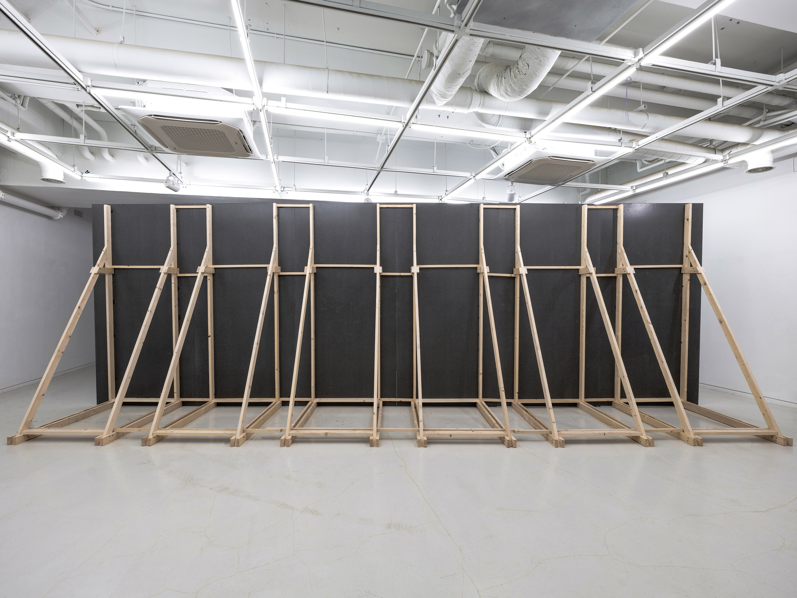
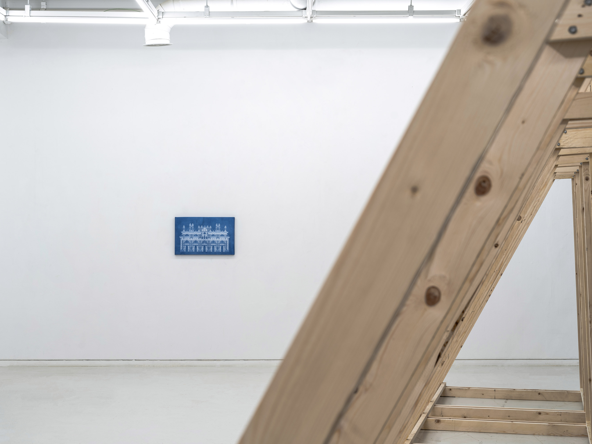
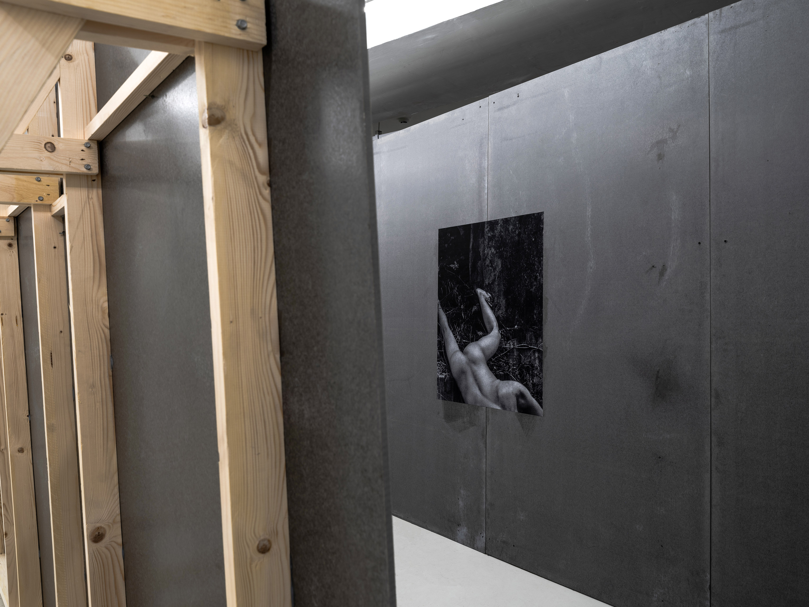
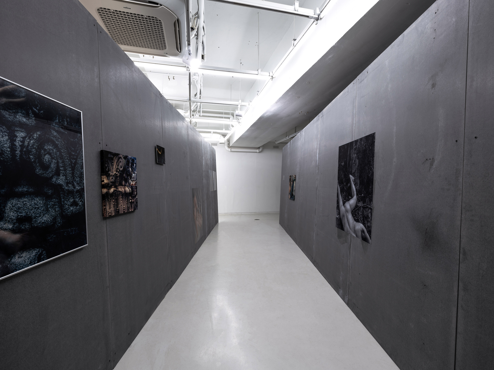
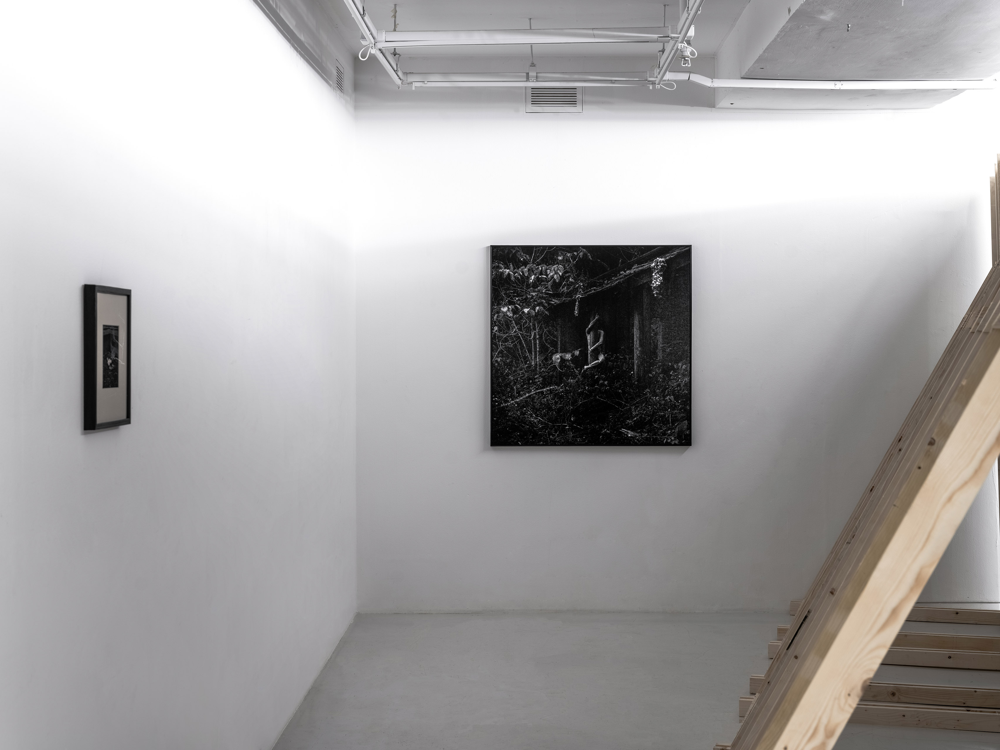
사진: 박도현
《no man’s land》는 통의동 보안여관에서 열린 작가의 첫 번째 개인전이다. 꽤 단출해 보이는 구성의 본전시는 정사각형에 가까운 공간의 절반을 검은 가벽이 가로지르며 구획되었다. 검은 가벽을 기준으로 왼쪽에는 건축 도면 드로잉을 시아노타입으로 인화하여 마감한 작품 <교각>만이 자리해 다소 텅 빈 인상을 자아냈다.
대부분의 관객은 두 갈래 길 중 검은 벽과 마주하며 생긴 좁은 길로 들어서게 되었을 것이다. 그 길 사이에는 본 전시의 메인 작업인 사진 연작 <융>이 펼쳐져 있다. 야간의 폐허에서 홀로 성행위를 하는 듯한 자신의 움직임을 장노출로 촬영하여, 신체가 반투명하게 배경 위에 얹혀 있도록 연출한 셀프 포트레이트이자 퍼포먼스 기록 사진이다. 그 뒤로는 항문에 손가락을 넣어 애무하듯 벽돌 틈 사이를 촬영한 사진 <융(다산로)>가 있고, 그 옆으로는 베트남의 항구 도시에서 촬영된 두 장의 사진 <융(깟바)>가 이어진다.
본 전시에서 공간의 골격을 이루는 검은 벽은 단순히 사진을 부착하기 위한 구조물이 아닌, '밤'의 은유이다. 퀴어 문화에서 익명의 상대와 성적인 접촉을 하기 위해 공공장소를 배회하는 행위인 '크루징(Cruising)'이 주로 밤 시간에 이루어지기 때문이다. 작가는 화이트 큐브 공간 한가운데에 밤의 장막을 드리워 크루징 사진이 안착할 자리를 마련한 셈이다. 그리하여 본 전시는 낮과 밤, 그리고 밤의 잔상을 품은 또 다른 낮으로 상호 교차하며 이루어진다.
사진마다 설치 방법이 다르다는 점에서 연출의 디테일이 돋보였으나, 사진 자체는 큰 틀에서 별다른 변주 없이 반복되는 내용을 담고 있었다. 마치 너무 잦은 만남이 각 개인에 대한 선명한 인상을 무너뜨리듯이 말이다. 그 안에서 변별점을 띤 작품은 신체 이미지 없이 파란빛을 반사하는 돌을 찍은 <융(청계천 베를린 광장)>과 어느 폐허의 기둥을 휘감고 있는 사진 <융(깟바)>이었다. 전자는 여러 상점으로부터 흘러나오는 빛을 반사하는 것으로, 하상현 기획자는 그 특유의 조각적 시선을 담아 이를 도시의 빛 내지는 ‘총천연색의 멍’이라 이름 붙인 바 있다. 후자는 그저 배경에 불과했던 장소에 신체가 밀착하며 하나 됨을 갈망하는 제스처처럼 읽혔다.
결말부처럼도 느껴지는 이 마지막 사진을 해석하기에, 본 전시는 어쩌면 작가의 현재를 느슨하게 요약한 축소본 같았는지도 모른다. 낮과 밤, 그리고 다시 낮. 그사이에 고여 있던 시간과 그 이후의 서사들이 그의 두 번째 개인전에서 펼쳐진다.
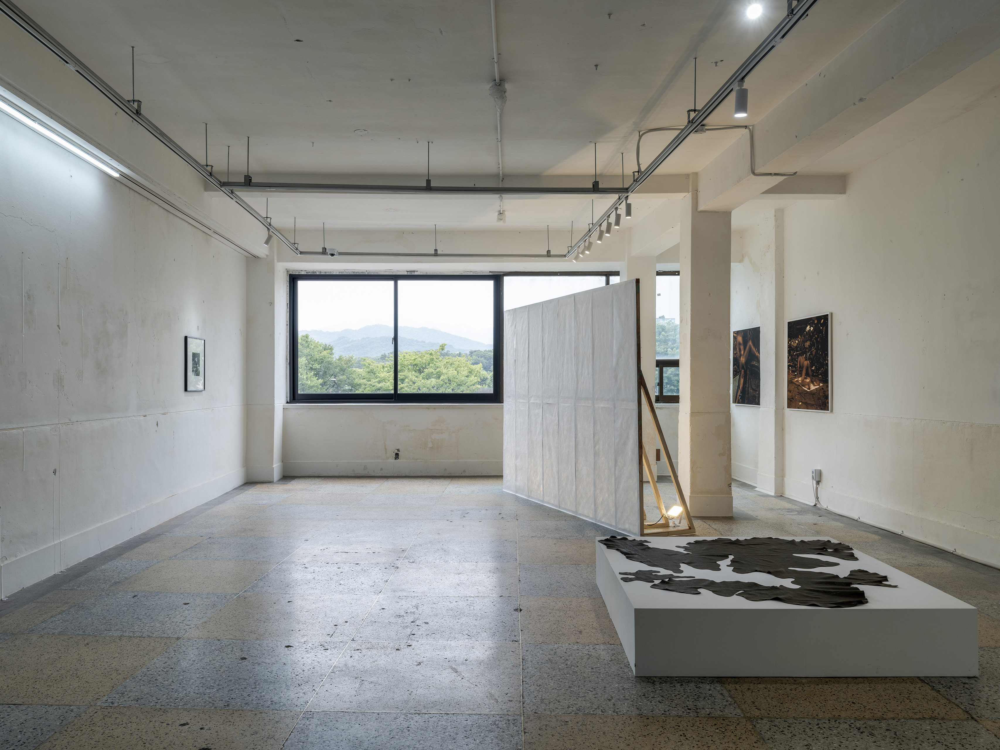
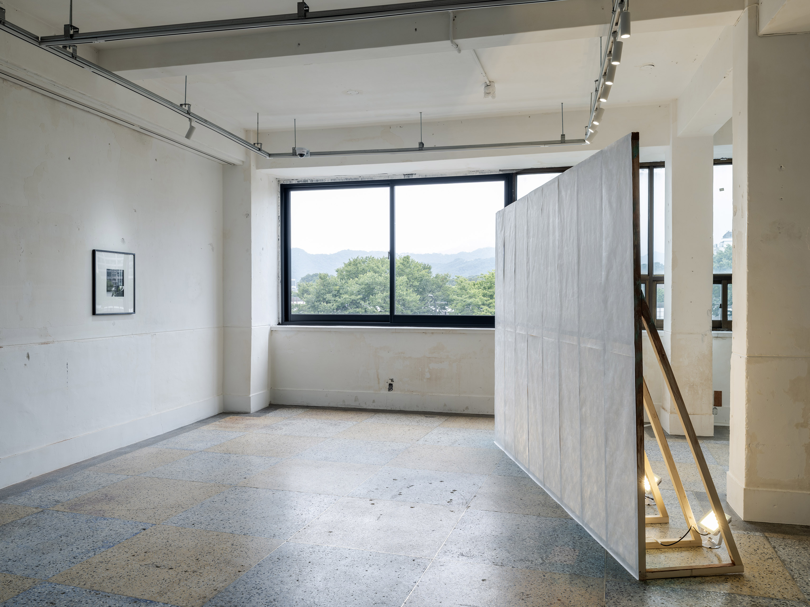
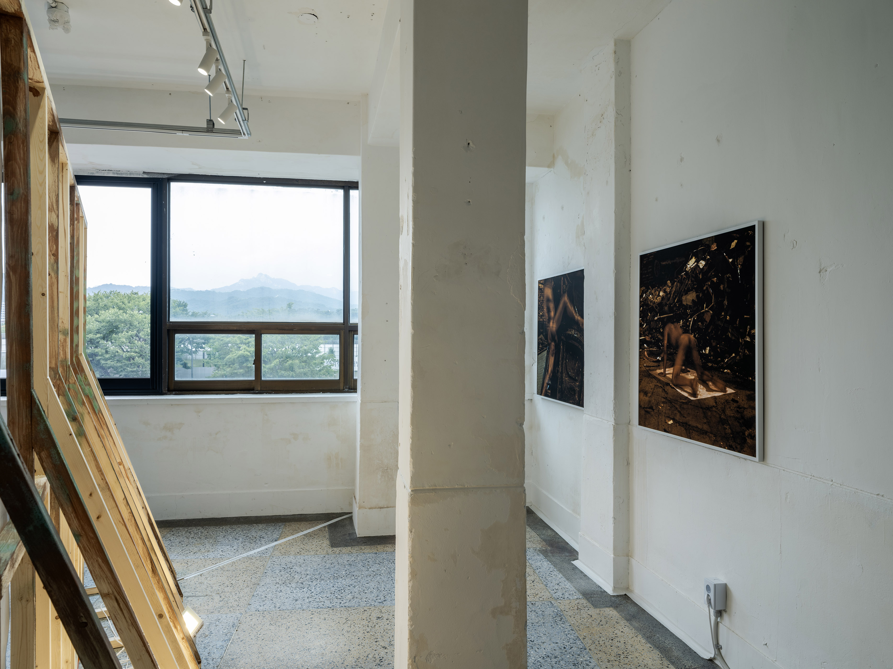
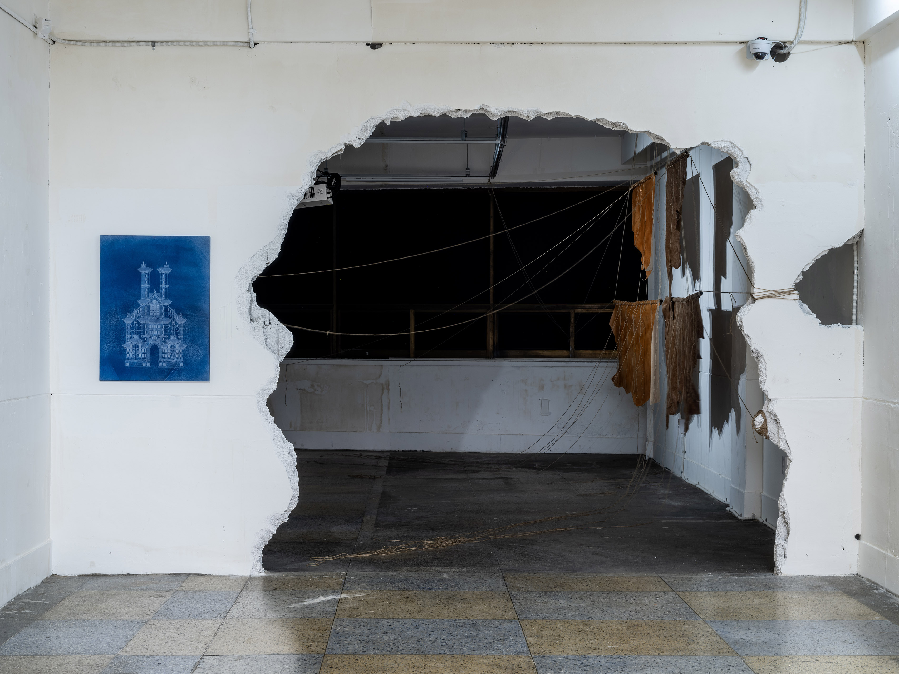
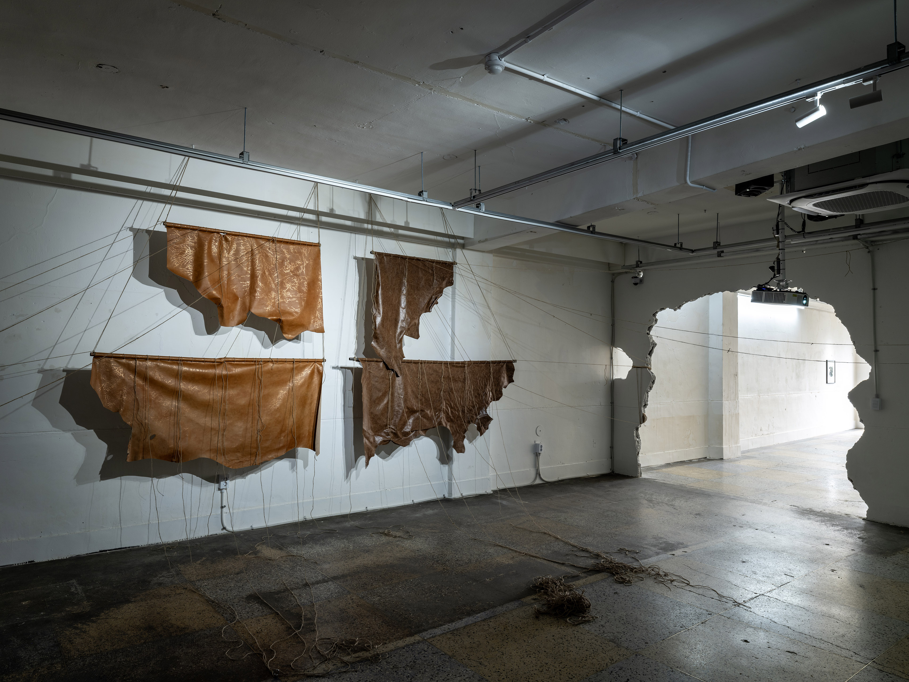
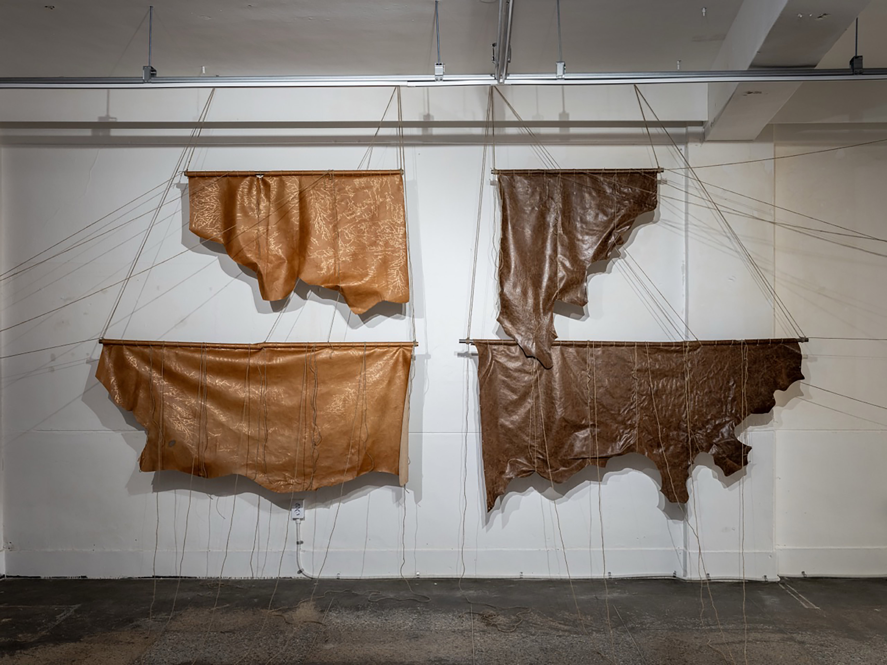
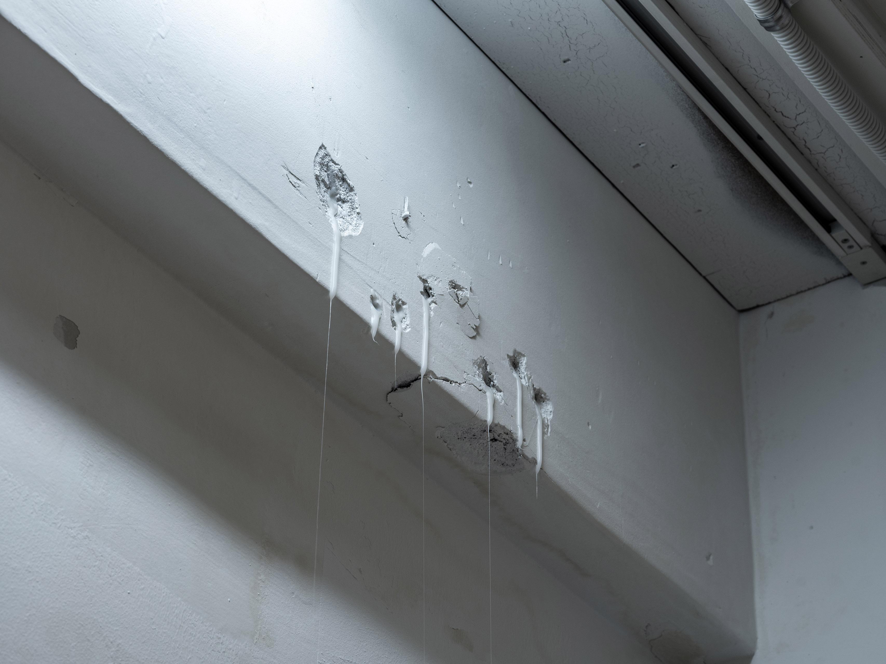
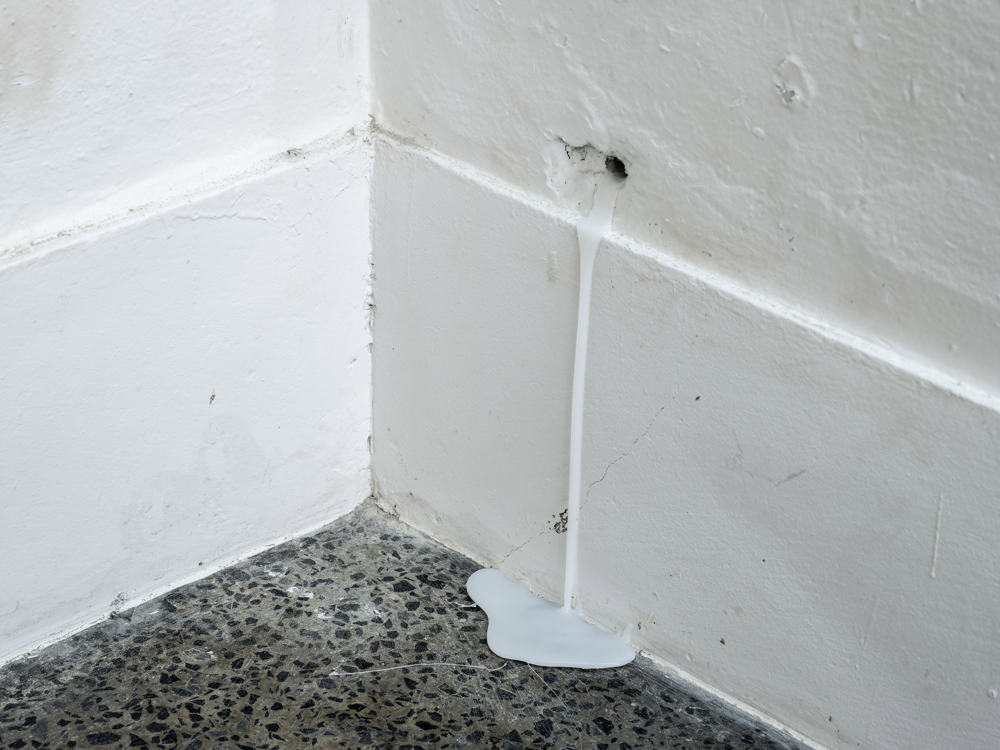
사진: 박도현
《no man’s land》가 도시의 뒷풍경을 크루징의 배경으로써 단면적으로 제시했다면, 그 후속 전시인 《남길 이름이 없다》는, 얼마 전에 작고한 자신의 아버지를 죽은 - 혹은 거세된2, 그럼으로써 트랜스적 가능성을 내포한 - 도시의 은유로서 제시하며, 작가가 감각하는 도시의 또 다른 면면을 내비친다. 전시에 입장하면 관객에게는 두 가지 작품이 주어진다. 도면 드로잉 연작인 <솟은 문>과 거친 콘크리트 벽면에 뚫린 구멍에 왁스를 흘러내려 고정한 설치 작업 <유전자>이다. 전시에 입장했을 때 공간의 좌측에 가장 먼저 보이도록 배치했다는 점에서 <솟은 문>은 (같은 도면 연작에 속하는) <교각>이 《no man’s land》에서 차지했던 자리와 대구를 이룬다. 하지만 <교각>이 첫 개인전에서 별다른 주석 없이 복선처럼 걸려 있던 것과 달리, 본 전시에서는 작품 속에 그려진 건축 도면이 실은 아버지가 생업을 위해 다루었던 그의 언어(이자 유산)였다는 점을 밝힌다. 그리고 이는 본 전시를 작가와 그의 아버지를 둘러싼 긴장 관계도로 독해할 수 있을 만큼 중요한 열쇠가 된다.
퀴어 남성으로서의 섹슈얼리티를 강하게 내비치는 작가의 사진 연작을 떠올려 봤을 때, 입구의 정면에 배치된 <유전자>가 흘러내리는 정액에 대한 은유라는 점은 크게 새삼스럽지 않다. 전시 공간인 대안공간 루프의 거친 노출 콘크리트 벽면은 작가의 작업 세계상에서 (구멍 난) 도시의 일면으로 해석되며 사정의 흔적들을 머금는다. 이 많은 정액은 과연 누구의 것일까? 가장 유력한 용의자는 도시의 크루징 질주자인 작가 본인이다. 하지만 작가가 도시와 자신의 관계는 서로 박고 박히는 관계라 말한 것처럼 이는 도시의 것이기도 하겠다. 하지만 본 전시에서 작가는 그 용의선상에 자신의 아버지를 새롭게 세우고자 하는 듯 보인다.
정상운은 자신의 작업 노트 「밤에 실체없고 미끄러운 것이 해협으로 들어선다」에서 "애도하는 것과 애무하는 것은 내게 근본적으로 같은 일"이라고 말한다. 기능이 멈췄으나 그 이전에 쌓인 시간을 간직하고 있는 폐허, 유적, 공사장(크루징 사진 연작의 물리적 배경)과 같은 비장소에서 행해지는 촉각적 접촉인 성행위(=애무)는 작가에게 있어 곧 “사라진 것을 불러내는 동시에, 아직 남아 있는 감각을 되살리는 일”(= 애도)인 것이다. 이 지점에서 <정(푸꾸옥)>에 담긴 자신의 아버지가 사진상 왼쪽을 바라보고 있으며 그 시선이 <유전자>를 향한다는 점3은 앞서 밝힌 필자의 심증을 강화한다. 작가에게 있어 아버지를 애도하는 일은 곧 그를 애무하는 것이기도 하기 때문이다.
작가는 전시를 설계하며, 자신이 게이라는 사실을 가족에게 밝히지 못한 채 살아왔던 시간을, 크루징 사진 연작 <정(을지로)>와 <정(푸꾸옥)> 사이에 가벽(<지도 6>)을 세워 감추는 선택에 반영했다고 말했다. 하지만 이는 역으로 그의 아버지가 자신의 트랜스적인 섹슈얼리티(“정체성과 권력의 구조를 해체하며 새로운 관계성을 실험하는”4)가 발현하는 사적인 순간을 못 본 척 지켜주는 선택이기도 하다. 아버지가 그동안 아들인 자신에게 그래 줬듯이 말이다.
아버지의 섹슈얼리티를 퀴어링하는 작가의 선택은 그로부터 물려받은 언어인 드로잉을 이어 나가는 일로써 확장한다. <지도>와 <돛대> 연작은 도면 연작인 <솟은 문>과 같은 선으로 이루어진 것으로 보이지만 하나의 건축물을 이루는 데 복무하지 않는다. 종이에 선을, 혹은 가죽에 박을 새겨 그때그때 화가의 필압에 따라 전개되는 연작들은 앞에서 서술했듯 퀴어인 자신과 퀴어링된 아버지의 시간을 서로로부터 감춰주는 가림막이 되기도 하고(<지도 3>), 그 자체로 대륙의 모습을 보여주는 지도가 되기도 하며(<지도 7>), 자신의 지향을 활짝 펼쳐 보여주는 돛대가 되기도 한다.(<돛대 1, 2>)
아버지가 물려준 그리기를 전유해 홀로 탈출의 항해를 떠나는 듯했던 작가의 행보에 대해, 김은서는 서문에서 “권력과 이데올로기, 가족과 국가로부터 홀연히 떠나와 자기 자신을 온전히 소유하는 퀴어 주체는 근대 자유주의가 빚어낸 자율적 주체의 환상에 가깝다”라고 짚어낸 바 있다. 이처럼 근대적 주체라는 환상을 내려놓는 태도는, 본인의 셀프 포트레이트 연작 이름을 개명하는 선택으로 이어진다. 자신의 첫 전시에서 작가는 크루징 사진 연작에 붙인 이름을 본인의 한글 성씨 ‘정(Jung)‘을 그것의 독일식 발음인 ’융(Jung)’으로 표기했다. 하지만 본 전시에서는 이를 다시 ‘정’으로 읽는다. 그리고 이때 그의 연작은 자신의 아버지 초상 사진 <정(푸꾸옥)>을 포함할 틈을 마련한다.
아시아의 일국인 한국에서 나고 자란 아버지의 핏줄을 잇지만, 그가 물려준 도면이라는 언어 위에 서구의 건축 양식을 뒤섞어 가며 수직의 첨탑(<솟은 문>)을 쌓아 올리는 행위는 상징적이다. 한국 사회의 완고한 가부장제와 이성애 중심적 규범 안에서, 자신의 비규범적 성생활을 번역하고 사유하기 위해 작가가 붙잡을 수밖에 없었던 것은 역설적으로 서구에서 유입된 Queer라는 언어와 미학이었기 때문이다. 즉, 정상운에게 '퀴어 되기'란 아버지의 도면(로컬한 현실) 위에 서구의 양식(서구적 언어)을 덧대어 섞어내는 위태로운 절충주의의 과정이었던 셈이다.
그렇기에 ‘융’이라는 새로운 이름을 내세우며 수평적인 밤의 장막을 헤매던 첫 번째 전시가 다소 판타지스러운 탈출기였다면, 아버지가 남긴 부고 앞에서 다시 한글 성씨인 ‘정’으로 복귀하는 두 번째 전시는 피할 수 없는 도착, 즉 아버지의 눈동자를 마주 보기 위해 돌아온 제자리에서 다시금 출항을 다짐하는 일이다.
- 유성원 작가의 책 제목 ‘성원씨는 어디로 가세요?’을 변형함.
- 정상운의 작업 노트 「밤에 실체없고 미끄러운 것이 해협으로 들어선다」 중 "나의 작업에서 한국, 특히 서울은 이 실험의 장으로서의 신체다. 서울은 식민과 전쟁, 냉전의 잔재가 퇴적된 몸이며, 남성성의 권력이 반복적으로 각인된 신체다. 나는 이 도시를 하나의 거세된 남성 신체로 다룬다."
- 이 착상 내지는 발견은 바루흐 고틀립과의 대화 중 그가 던진 농담이기도 하다.
- 정상운, 위의 글.